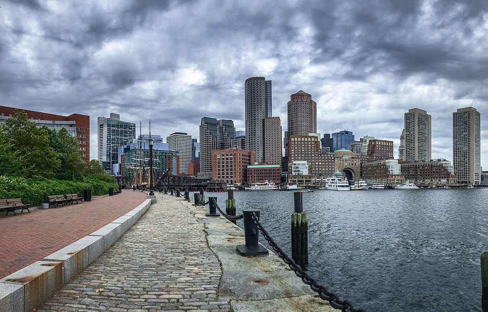

BOSTON WEATHER
2017y-klassen fra Rysensteen Gymnasium var i Boston i oktober 2019. Rejsens formål var at undersøge klimakrisen i USA, og derudfra producere et produkt i form af en video. En overnatning i Reykjavik startede 2017y-klassen med, hvor eleverne fik mulighed for at se nordlys, hvaler og lidt af byen. Stoppet i Reykjavik efterfulgtes af 4 dage i storbyen Boston, hvor der var planlagt besøg til Harvard University, Massachussetts Institute of Technology (MIT), Museum of Science, og meget mere. Efter dagene i Boston gik turen videre til byen Marion, hvor TaborAcademy ligger - det befinder sig ca. en times kørsel fra Boston. Her boede vi hos værts familier og oplevede livet som amerikansk gymnasieelev.
